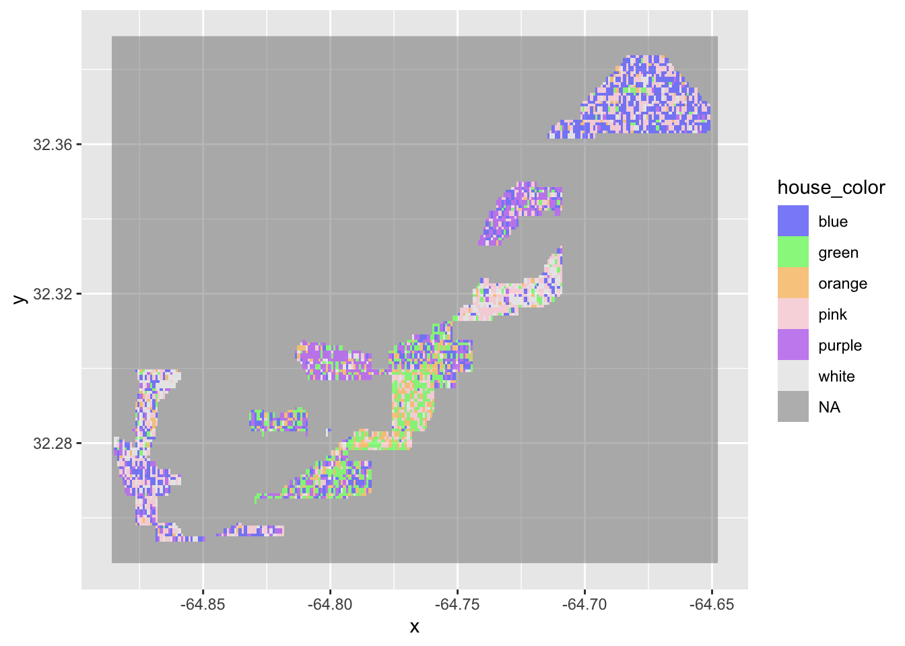

Module 7 Project
Introduction

White-tailed deer (WTD, Odocoileus virginianus) are native to much of North America and represent an ecologically important species across a diverse array of habitats, from dense mixed forest to open farm- and grasslands. The currently estimated WTD population of 30 million in the United States is about the same as pre-colonization. Due to a combination of over hunting and poor resource management practices, the US population dipped to fewer than 2 million by about 1900, but the abundance of this species has been on a steady rebound for over the last 100 years.
However, the historical abundance of WTD in New England is largely different from the continental trend. New England marks the northern edge of the species’ historical range and WTD were rare in the area, especially in northern New England. What’s more, due to post-colonial land-use practices—particarly, near total deforestation for agricultural purposes–WTD were largely extirpated from the area by the late 18th century. With changes associated with a move away from an agrarian economy, reforestation, and the succession of mixed habitats, WTD abundance slowly increased through the last half of the 20th century. However, it’s only recently, say within the last few decades, that New England WTD abundance has in increased sharply, particularly in suburban areas.
The question of what’s driven this recent sharp increase in WTD abundance is the focus of this project. In particualar, we’ll ask if WTD harvest (number taken during hunting season, a proxy for abundance) is associated with land-use and population (a proxy for suburbanization). For this we’ll focus on the great state of New Hampshire, Prof. Kenaley’s birthplace.
To answer such a question, one could, of course, assemble harvest,
land-use, and population data for the Granite State as a whole and
commence with the typical statistical operations (e.g., linear modeling,
a la harvest~population*land-use). However, NH is a rather
diverse state in the two former, potentially predictive variables. In
the north of the state, there are lots of forests. In the southern part
of the state, there a lots more people, and a mix of developed,
forested, and agricultural land. In between, we have a diversity
variably populated scattered amongst forested, farmed, and forgotten
(i.e., successional) areas. That is, each of these attributes vary
spatially across the landscape and focussing on this great state as a
whole wouldn’t account for the important variation across it. We
therefore need to enter the realm of spatial analysis, specifically spatial
associate. By this, we mean the degree to which things are similarly
arranged in space.

The 1982 WTD densities (A) and 2001–2005 deer densities (B) in
the continental United States.

This species is also the most popular large game animal on the continent
Just a few decades ago, to assess such a spatial question would require buying extremely expensive pieces of software.
Let’s take a momentary break for the icy climes of the granite state and consider how spatial analysis might be undertaken in R. We’ll consider examples from a much more beachy place, Bermuda, where, as far as I know, there are no WTD.
Spatial Analysis in R
Many R packages have been developed for spatial analysis. Many are
idiosyncratic, requiring one to work with particular object classes that
don’t work well with other data science frameworks like
tidyverse. There are a few, namely sf and
stars that do work well with the tidyverse.
sf provides a table format for simple features, a spatial
object class where feature geometries are stored in a list-column (i.e.,
each row in contains a column as a list of shapes). stars
was written to support raster data, amongst other things (e.g., time
series). The development of both packages came from the bottom up, with
lots of input from the data science community that relies so much on
tidyverse. The packages are designed to work together.
Functions or methods operating on sf or stars
objects start with st_, making it easy to recognize them as
appropriate for spatial tasks in the sf and
stars workflow.
The Spatial Analysis Framework
Spatial analysis is a sprawling field in data science. Although spatial data and its analysis is often simply treated as longitude and latitude and some attribute or variable that varies with it, the field is so much more. Yes, coordinates are important, but so are the patterns that emerge when we consider how attributes vary within and between spatial areas and grids.
This representation of data in shape or grid format marks an
important framework within spatial analysis: in addition to point
(coordinate) data, attributes are often aggregated within either shapes
(e.g., lines, polygons, etc.) or grids. The former is considered shape
information, the later raster information, an allusion to pixels of an
image. We can obtain shape or raster data from myriad sources: state and
federal agencies, universities and non-profit organizations, and even
R packages that facilitate data download.
Working with shape data
Shape data often contain geopolitical information (e.g.,city, state,
or country boundaries) and even topological data (e.g., the boundaries
of rivers, lakes, and oceans, and elevation contours). For instance,
let’s load a shape of the beautiful country of Bermuda using the
rnauturalearth package and kick up sf, the
package of choice that deals in shape data, to produce a simple map:
library(rnaturalearth)
library(sf)## Linking to GEOS 3.11.0, GDAL 3.5.3, PROJ 9.1.0; sf_use_s2() is TRUElibrary(tidyverse)## ── Attaching core tidyverse packages ──────────────────────── tidyverse 2.0.0 ──
## ✔ dplyr 1.1.1 ✔ readr 2.1.4
## ✔ forcats 1.0.0 ✔ stringr 1.5.0
## ✔ ggplot2 3.4.1 ✔ tibble 3.2.1
## ✔ lubridate 1.9.2 ✔ tidyr 1.3.0
## ✔ purrr 1.0.1## ── Conflicts ────────────────────────────────────────── tidyverse_conflicts() ──
## ✖ dplyr::filter() masks stats::filter()
## ✖ dplyr::lag() masks stats::lag()
## ℹ Use the conflicted package (<http://conflicted.r-lib.org/>) to force all conflicts to become errorsbermuda <- ne_states(country="Bermuda") %>%
st_as_sf
bermuda %>%
ggplot()+
geom_sf()
Notice here, that we have to convert the shape retireved from the
rnaturalearth package (an ojbect of class
“SpatialPolygonsDataFrame”) to an sf object. This sort of
conversion is perhaps the most vexing part of spatial analysis in R.
That is, many spatial object classes exist depending on the
R package used and to work with objects across functions of
different origins, conversion needs to happen. Yet, we’re often unsure
of which conversion function to use. We’ll try to keep conversion to a
minimum in this project, but be ware. Fortunately, sf has
the handy st_as_sf() that allows conversion of a spatial
polygon data frame to an sf object.
Because sf plays nice with the tidyverse,
to plot and sf object, we can use the ggplot()
framework that’s become so much of the class. For this we use
sf’s geom_sf().
Working with raster data
Raster data is presented in essentially pixel format. That is, each pixel in a spatial field represents 3 dimensions: some area of a particular 2D resolution (e.g., 30 x 30 m, 1 x 1 km) and some value of attribute, the color.
library(stars)## Loading required package: abindbermuda_pop <- read_stars("https://data.worldpop.org/GIS/Population_Density/Global_2000_2020_1km/2020/BMU/bmu_pd_2020_1km.tif") %>% st_crop(bermuda)
ggplot()+
geom_stars(data=bermuda_pop)
Combining shape and raster data
bermuda2 <- bermuda_pop %>%
setNames("population") %>%
st_as_sf() %>%
st_join( bermuda) %>%
group_by(name) %>%
summarise(population=sum(population))bermuda_house <- read_stars("data/bermuda_house_colors.tiff") %>% setNames("house_color")
ggplot()+
geom_stars(data = bermuda_house,alpha=0.5)+
scale_fill_manual(values=c("blue","green","orange","pink","purple","grey90"))
Plotting prety maps in R
library(mapview)
mapview(bermuda2, zcol = "population")Methods
Back to the frozen enclace of NH.
Data source
OK, let’s first address the obvious. We will be using deer harvest data as a proxy for WTD abundance. Understandably, for some this may be a difficult thing with which to grapple. After all, we’re considering how many times a majestic animal has been killed, to put in plainly. There are many ethical considerations here and I’m happy to discuss them all in private. But, if we can, let’s just take the data at face value: a measure of abundance.
Our deer harvest data comes from New Hampshire Department of Fish and Wildlife’s last three annual harvest summaries from 2021-2023. These
Shape data
Shape data. Please ignore
Raster data
Land use data. Please ignore
Adding custom data to shape data
Ignore
Project Report
Please submit your report to your team GitHub repository as an .Rmd document with HTML output that addresses the following questions:
- Is WTD spatially autocorellated?
- Does population and/or land-use patternspredict WTD harvest values?
In answering these questions, be sure to use the visualization, modeling, and model-assessments tools we’ve used in the course so far.
The answers and narrative in your .Rmd should include the following components:
- A YAML header that specifies HTML output, the authors, and a bibliography named “BIOL3140.bib”. Submit this bibliography as well!
- Sections including an introduction, methods, results, discussion,
author contributions, and references. Make sure that each, aside from
the references, includes one to two short paragraphs. Specifically:
- Introduction: Frame the questions, indicating why they are important, what background work has been done in this realm, and how you will answer them. Please include at least one reference to support the summary of previous work. Note: this can be done easily by refiguring the introduction to this project report.
- Methods: Explicitly state how you answered the questions, including a narrative of all the analyses both qualitative and quantitative.
- Results: Include any appropriate figures or tables and a narrative of the main results that are important to answering the questions.
- Discussion: Succinctly declare how the results relate to the question and how they compare to previous work devoted to the topic. In addition, be sure to comment on the importance of your findings to the broader topic at hand. Please include at least one reference to another relevant study. Note: circling back to the introductions, both to this project description and yours, will be helpful here.
- Author contributions: Briefly outline what each team member contributed to the project.
Project reports should be uploaded by 11:59 PM on Thursday, November 16th.
Please have a look at out Phase II report rubric to get a sense of how this and other Phase II reports will be grade.